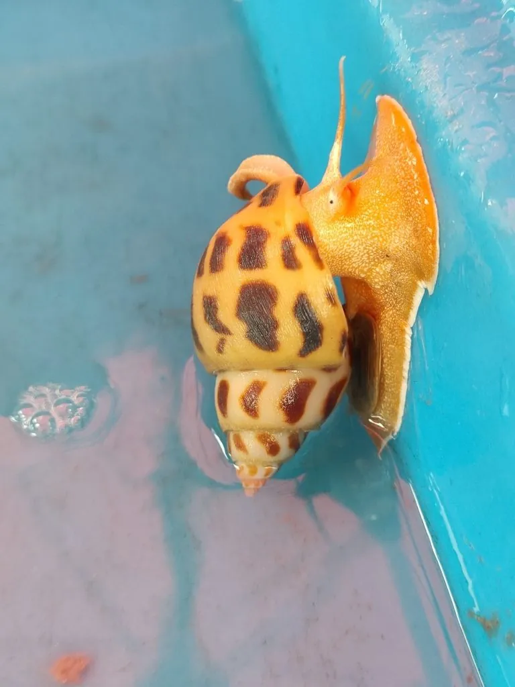

软体动物 · 动物界
方斑东风螺 Babylonia areolata

壳面有褐色方形斑块的中型海螺，栖息于潮间带下区至浅海沙泥底，嗅觉灵敏、喜食腐肉，是南方常见养殖螺。
- 分类
- 门软体动物门纲腹足纲目新腹足目科东风螺科属东风螺属
- 栖息环境
- 潮间带下区至水深二十米的沙泥底与泥沙底，白天埋沙或躲藏
- 地理分布
- 中国南方沿海、东南亚和印度洋
- 保护级别
- 尚无保护级别；野生资源受过度采捕影响，部分海区已减少
物种志
方斑东风螺的贝壳呈长卵圆形，壳高五至七厘米，壳质坚厚，螺层约八层，壳面灰白至淡黄，上面排列着整齐的褐色方形斑块，斑块像棋盘一样分布，方斑东风螺之名由此而来。壳口呈半圆形，外唇内侧有细密的齿状突起，前沟短而宽，水管粗，能伸出壳外探测。足部宽大，肌肉发达。
它分布于中国南方沿海、东南亚和印度洋，栖息在潮间带下区至水深二十米的沙泥底和泥沙底，白天埋在沙中或躲在礁石下，夜间出来活动，靠嗅觉寻找食物，是肉食性和腐食性螺类，喜食死鱼、死虾和贝类。它是雌雄异体，繁殖期在春夏，卵囊产于沙面，幼虫孵化后浮游一段时间再附着。它是南方沿海的名贵食用螺，肉质脆嫩，已有人工养殖，目前尚无保护级别，野生资源受过度采捕影响，部分海区已明显减少。
形态与习性
- 壳高五至七厘米，长卵圆形，壳质坚厚
- 壳面灰白底上排列褐色方形斑块
- 栖息水层潮间带下区至水深二十米的沙泥底
- 食性肉食兼腐食，喜食死鱼、死虾和贝类
- 习性白天埋沙或躲藏，夜间靠嗅觉觅食
- 利用南方名贵食用螺，已有人工养殖
趣味知识
- 它壳上的褐色斑块排得像棋盘，一块块方方正正。
- 它的嗅觉很灵，水里有死鱼的味道就会从沙里钻出来。
- 它是南方宴席上的名贵海螺，野生的大个个体已不多见。